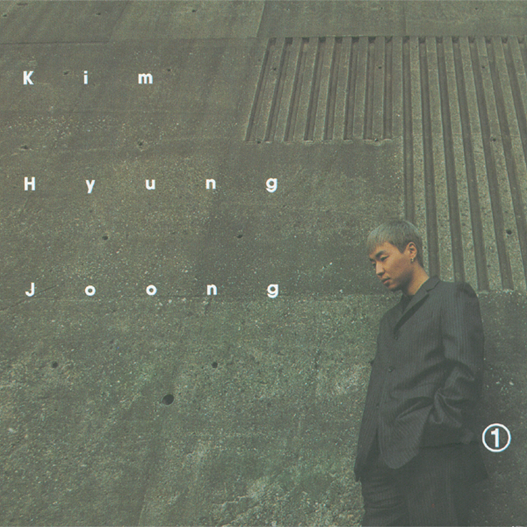

안녕하세요, 라보엠입니다.
오늘은 2003년부터 20년 넘게 오랜 사랑을 받아온 명곡, 김형중의 ‘그랬나봐’를 소개해드리겠습니다. 유희열이 작사·작곡하고, 김형중의 청량하면서도 아릿한 목소리로 완성한 이 곡은, 시간이 지나도 여전히 처음 사랑을 떠올리는 청춘의 마음을 담고 있습니다. 2024년 드라마 선재 업고 튀어 OST로 다시금 화제가 되며 또 한 번 우리 곁에 찾아온 이 노래, 그 특별함을 들여다보겠습니다..

김형중 그랬나봐 - 한밤의 고백, 풋풋하고 서툰 사랑의 순간
‘그랬나봐’는 유희열 특유의 섬세한 멜로디와 반주, 그리고 김형중의 떨림 어린 청춘 보컬이 절묘하게 어우러져 있습니다. 도입부 피아노 선율은 화자의 마음을 조심스럽게 건드려주고, 감정의 고조에 따라 고음이 점차 터져 나오며 사랑의 뜨거움을 전달합니다. 완벽하지 않은 고음, 혹은 불안불안한 숨결조차 이 노래에선 가장 설레는 미덕이 됩니다. 참신한 프로듀싱과 김형중 보컬의 순수한 매력은 곡이 발표된 2003년에도, 2020년대를 건너 다시 재조명되는 지금에도 변함없이 리스너의 마음을 간지럽힙니다.
노래는 많은 친구들이 모인 어느 저녁부터 이야기가 시작됩니다. 늘 익숙했던 공간이 어느새 텅 빈 듯 느껴지는 순간—내가 좋아했던 향기가 머금은 공기, 혹시 네가 아닐까 자꾸 고개를 돌리며 널 찾게 되는 마음. 짝사랑의 설렘과 망설임이 그대로 담긴 첫 구절은 듣는 이를 그 시절, 자신의 경험 속으로 조용히 초대합니다. 구체적인 동네, 우연히 알게 된 이메일 주소, 밤새 모니터 앞에서 너를 기다리는 시간까지, 어떤 장면 하나 허투루 지나치는 법 없이 소중하게 그려냅니다.
곡의 성공 이후 먼데이키즈, 유회승 등 후배 가수들이 다양한 스타일의 커버 무대를 선보이며 ‘그랬나봐’만의 풋풋한 무드를 한층 풍성하게 만들어주었고, 특히 최근 tvN 드라마 OST로 엔플라잉 유회승이 부른 리메이크 버전은 또 다른 감동을 남겼습니다.
그랬나봐 노래 가사
많은 친구 모인 밤 그 속에서 늘 있던 자리에
니가 가끔 보이질 않을 때
내가 좋아했던 너의 향길 맡으며
혹시 니가 아닐까 고갤 돌려 널 찾을 때
우연히 너의 동넬 지나갈때면
어느새 니 얼굴 자꾸 떠오를 때
그랬나봐 나 널 좋아하나봐
하루하루 니 생각만 나는걸
널 보고 싶다고 잘할 수 있다고
용기내 전활걸고 싶었는데
그게 잘 안돼 바보처럼
우연히 너의 메일을 알게되면서
모니터 앞에 널 밤새 기다릴때
그랬나봐 나 널 좋아하나봐
하루하루 니 생각만 나는걸
널 보고 싶다고 잘할 수 있다고
용기내 전활걸고 싶었는데 그게 잘 안돼
말하지 못한 막막함을 너는 알고 있을까
오랫동안 기다려온 사랑 내 앞에 숨쉬고 있는걸
그랬나봐 나 널 좋아하나봐
하루하루 니 생각만 나는걸
널 보고 싶다고 잘할 수 있다고
용기내 전활걸고 싶었는데 그게 잘 안돼
넌 언제나 나를 꿈꾸게 하지
지금보다 더 좋은 남자 되고 싶다고
널 만나러 가는 이 시간 난 연습해
그토록 오랜시간 가슴속에 숨겨왔던 말
사랑해.
가사는 용기 내 전화를 걸고 싶지만 그게 너무 어려워 한참을 망설이는 화자의 심정을 담고 있습니다. 결국 내 마음을 알아줬으면, 말하지 못한 막막함을 너는 알고 있을까, 오랫동안 가슴에 품어둔 고백이 마침내 입술 끝에 맺히는 순간까지—우리는 노래 속 주인공과 함께 설레고, 안타깝고, 때로는 웃음 짓게 됩니다.
‘그랬나봐’는 사랑을 선언하기 이전의 아이처럼 순수한 감정에 충실합니다. 누군가를 좋아한다는 걸 스스로 먼저 인정하게 되는 그 순간, 매일매일이 온통 그 사람으로 가득 차버린다는 당황스러움, 그리고 그렇게 한참 곁을 맴돌며 속마음조차 들킬까 조심스러운 나. “그랬나봐, 나 널 좋아하나봐. 하루하루 니 생각만 나는걸”—이 반복되는 후렴구에선 누구나 한 번쯤 경험한 아릿한 설렘이 고스란히 전해집니다. 특히 “지금보다 더 좋은 남자가 되고 싶어서, 널 만나러 가는 길에 연습해오던 말, 사랑해”—이 마지막 장면에선 그토록 숨겨온 진심을 마침내 꺼내보려는 용기가 느껴집니다. 듣는 이로 하여금 마음 깊은 곳에서 오래 숙성된, 고백하지 못했던 사랑이 떠오르는 순간이기도 합니다.
맺음말
김형중 ‘그랬나봐’가 오랜 세월 사랑받는 이유는, 누구나 매일 스치듯 지나치는 순간에도 이 노래의 주인공이 되어볼 수 있기 때문입니다. 직접적이거나 거창한 고백 한마디 없이도, 조용히 곁에 머물던 소중한 감정. 그리고 그 모든 서툼조차 미덕이 되는 성장의 시간. 이 노래는 첫 마음, 그리고 오래 기다려온 순간의 설렘과 용기를, 한 곡 안에 온전히 담아냅니다.
오늘처럼 누군가를 떠올리며, 혹은 혼자만의 고백을 연습하는 밤이라면, '그랬나봐'를 꼭 들어보시길 권합니다. 곡의 첫 소절부터 마지막, 오래 숨겨온 "사랑해"라는 한마디까지—오랜 시간 품어온 설렘이 여러분 마음에도 조용한 파문을 남겨줄 것입니다.